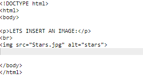
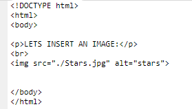
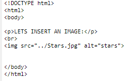

HTML Inserting Images
The HTML tag is used to embed an image in a web page.
Images are not technically inserted into a web page; images are linked to web pages. The 'img' tag creates a holding space for the referenced image.
The 'img' tag has two required attributes:
- src - Specifies the path to the image
- alt - Specifies an alternate text for the image, if the user for some reason cannot view it (because of slow connection, an error in the src attribute, or if the user uses a screen reader).
'src' attribute
As this attribute specifies the root of the img, it needs to be given correctly including the img type(.png/.jpeg).
Linking img from the file location:
If the image is in the file where your HTML file is, then you have link it like this:

If the image is one file away from the file where your HTML file is, then you have link it like this:

If the image is two file away from the file where your HTML file is, then you have link it like this:
